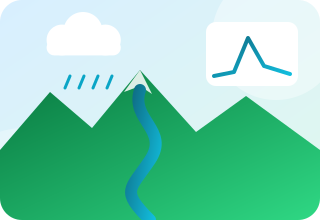
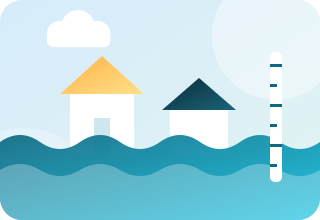
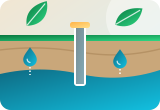
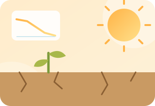
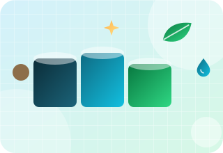
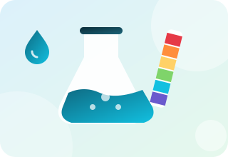
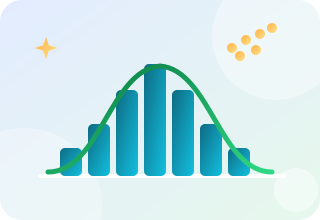
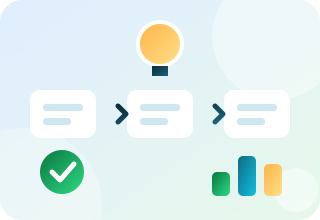

How much does a course cost?
Fees depend on the course, the format and the batch size. Message us with the course name and we will send the current fee.
Practical courses in geospatial analysis, water, environmental practice, data science, research skills and AI, online or on campus.
Six batches delivered, four online and two on campus. Learn GIS and remote sensing by doing the work.

Pick a topic to filter the list. Open Details to see what each course covers, then enquire. Dates and fees are shared when you ask.
Our flagship course, delivered in six batches. Learn to map, analyse and present spatial data.
Process years of satellite data in the cloud without downloading it.
Automate map work and handle raster and vector data with code.
From flight planning to maps made from drone images.

Build, calibrate and check a rainfall and runoff model for a catchment.

Model river flow and produce flood depth and extent maps.

Understand aquifers and estimate how much water returns to them.

Turn long weather records into drought and trend results.

How an effluent treatment plant is planned, sized and checked.
Learn the structure of an IEE or EIA report and how to prepare one.
Plan and carry out a field survey, and handle samples and data properly.

Understand key parameters and how to read the results.
Use machine learning for classification and prediction in environmental studies.
A practical start with Python for cleaning, analysing and plotting data.

Run common statistical tests and present them clearly.

Write a paper and take it through submission and review.

Make clear figures and keep references in order.
Draft, improve and check technical documents with AI support.
Tell us the course and your preferred format.
We confirm the batch, dates and fee with you.
Hands-on sessions with real data and guided practice.
Complete the work and receive your certificate where offered.
We can run a dedicated batch for a university department, NGO or company, online or at your premises. Tell us the group size and what your people need to do.
Fees depend on the course, the format and the batch size. Message us with the course name and we will send the current fee.
Participants of the GIS and RS Certification Course receive a certificate from BlueGreen based on attendance. Ask us about certificates for other courses.
We have run online batches through Zoom or Google Meet and on-campus batches. Other formats can be arranged on request.
Our past batches have had about 30 to 50 learners. A dedicated batch for your team can be smaller.
Most courses are open to beginners. Each course card shows the level, and the details window lists who it is for.
Yes, tell us what your team needs and we will say whether we can design it.
Tell us your background and goal. We will suggest a course and a format.